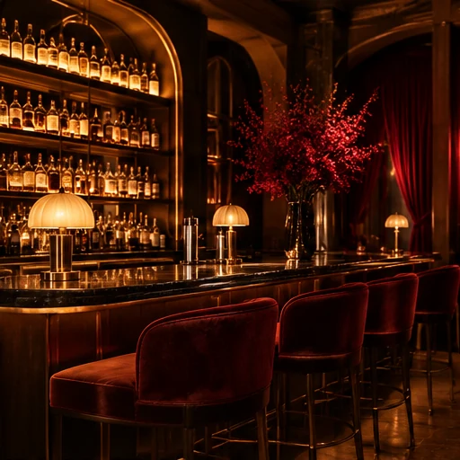

TWO FLOORS. ONE MOOD.
Every corner is lit like a last scene.
Upstairs, a listening bar in walnut and brass. Downstairs, a velvet-walled club built around a hand-tuned sound system. A house designed for lingering.
280GUESTS
IIFLOORS
04:00LAST CALL



THE NOCTURNE STATE OF MIND